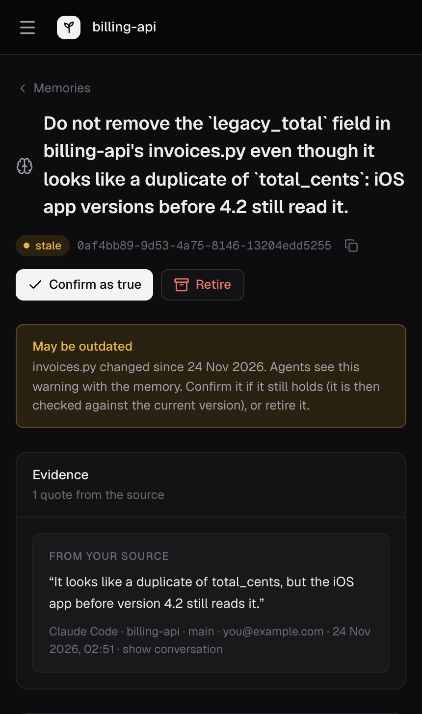

How Memvine works
Your agent should not need telling twice. Here is one lesson, followed through a real run.
YouI'm tidying export.py before the release. Read it and tell me what you would change. Don't edit anything yet.
Your agentHere's what I'd change in export.py, in rough priority order. I haven't edited anything. …
YouLeave the timeout in export.py alone. 90 seconds is deliberate: the bank's SFTP server takes over a minute to answer at month end. It was lowered to 15 once and the nightly export failed for three days.
Your agentUnderstood. I won't touch TIMEOUT_SECONDS, and it stays at 90. I didn't flag it in my review, so nothing I proposed changes it. …

A teammateThe export job takes too long to give up when the bank is down. Lower the timeout in export.py to 10 seconds.
Their agentI haven't changed anything. TIMEOUT_SECONDS in export.py:7 is still 90, and project memory says it should stay there:
- The bank's SFTP server takes over a minute to respond at month end.
- Someone lowered the timeout to 15 before, and the nightly export failed for three days.
At 10 seconds, the export would probably time out every month end. It would give up quickly when the bank is really down, but it would also give up when the bank is only slow. …

Every screen is from one run on 17 November 2026: Claude Code with the Memvine plugin, a Memvine server on a laptop and a sample repository. A “…” marks where a reply is shortened.